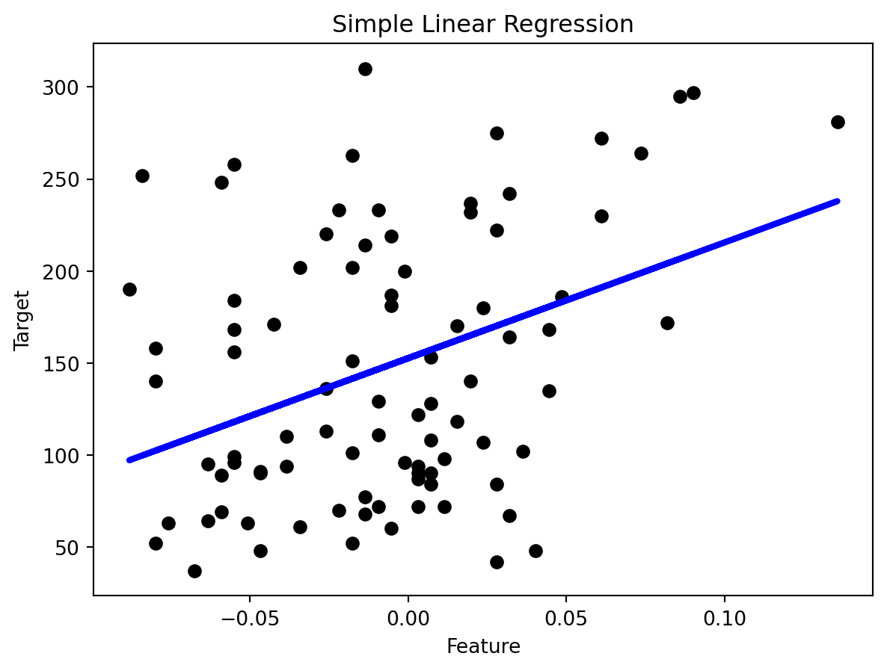

Code
import numpy as np
import matplotlib.pyplot as plt
from sklearn import datasets
from sklearn.linear_model import LinearRegression
from sklearn.model_selection import train_test_split
from sklearn.metrics import mean_squared_error, r2_scoreRegression is supervised learning algorithm, for each input has a corresponding output, and algorithms are trained to predict the output based on the input. Linear regression models the linear relationship between a dependent variable \(Y\) (response variable) and one or more independent variables \(X_i\) (predictors). It’s used to predict values within a continuous range, like housing price.
Vanilla linear regression involves only one independent variable X. The model takes the linear function:
\[ Y = \beta_0 + \beta_1X + \epsilon \]
\(\beta_0\) is the y-intercept constant
\(\beta_1\) is the slope coefficient for \(X\)
\(\epsilon\) is the error term (residuals, representing the part of \(Y\) not explained by \(X\))
Let’s use it on a simple example, knowing the sepal and petal’s length and width, will the softmax model predict the iris species?
# Load the diabetes dataset
diabetes = datasets.load_diabetes()
X = diabetes.data[:, np.newaxis, 2] # Use only one feature
y = diabetes.target
# Split the data into training/testing sets
X_train, X_test, y_train, y_test = train_test_split(X, y, test_size=0.2, random_state=42)
# Create linear regression object
regr = LinearRegression()
# Train the model using the training sets
regr.fit(X_train, y_train)
# Make predictions using the testing set
y_pred = regr.predict(X_test)
# The coefficients
print('Coefficients: \n', regr.coef_)
# The mean squared error
print('Mean squared error: %.2f' % mean_squared_error(y_test, y_pred))
# The coefficient of determination: 1 is perfect prediction
print('Coefficient of determination: %.2f' % r2_score(y_test, y_pred))
# Plot outputs
plt.scatter(X_test, y_test, color='black')
plt.plot(X_test, y_pred, color='blue', linewidth=3)
plt.xlabel('Feature')
plt.ylabel('Target')
plt.title('Simple Linear Regression')
plt.show()Coefficients:
[998.57768914]
Mean squared error: 4061.83
Coefficient of determination: 0.23
---
title: "Linear and non-linear regression"
---
## :blue_heart: What is linear regression?
Regression is <span style="color: red;">supervised </span> learning algorithm, for each input has a corresponding output, and algorithms are trained to predict the output based on the input. Linear regression models the linear relationship between a dependent variable $Y$ (response variable) and one or more independent variables $X_i$ (predictors). It’s used to predict values within a continuous range, like housing price.
Vanilla linear regression involves only one independent variable X. The model takes the linear function:
$$
Y = \beta_0 + \beta_1X + \epsilon
$$
* $\beta_0$ is the y-intercept constant
* $\beta_1$ is the slope coefficient for $X$
* $\epsilon$ is the error term (residuals, representing the part of $Y$ not explained by $X$)
## :purple_heart:
Let's use it on a simple example, knowing the sepal and petal's length and width, will the softmax model predict the iris species?
```{python}
import numpy as np
import matplotlib.pyplot as plt
from sklearn import datasets
from sklearn.linear_model import LinearRegression
from sklearn.model_selection import train_test_split
from sklearn.metrics import mean_squared_error, r2_score
```
```{python}
# Load the diabetes dataset
diabetes = datasets.load_diabetes()
X = diabetes.data[:, np.newaxis, 2] # Use only one feature
y = diabetes.target
# Split the data into training/testing sets
X_train, X_test, y_train, y_test = train_test_split(X, y, test_size=0.2, random_state=42)
# Create linear regression object
regr = LinearRegression()
# Train the model using the training sets
regr.fit(X_train, y_train)
# Make predictions using the testing set
y_pred = regr.predict(X_test)
# The coefficients
print('Coefficients: \n', regr.coef_)
# The mean squared error
print('Mean squared error: %.2f' % mean_squared_error(y_test, y_pred))
# The coefficient of determination: 1 is perfect prediction
print('Coefficient of determination: %.2f' % r2_score(y_test, y_pred))
# Plot outputs
plt.scatter(X_test, y_test, color='black')
plt.plot(X_test, y_pred, color='blue', linewidth=3)
plt.xlabel('Feature')
plt.ylabel('Target')
plt.title('Simple Linear Regression')
plt.show()
```
## :heart: Non-linear regression?
Regression is <span style="color: red;">supervised </span> learning algorithm, for each input has a corresponding output, and algorithms are trained to predict the output based on the input. Linear regression models the linear relationship between a dependent variable $Y$ (response variable) and one or more independent variables $X_i$ (predictors). It’s used to predict values within a continuous range, like housing price.
Vanilla linear regression involves only one independent variable X. The model takes the linear function:
$$
Y = \beta_0 + \beta_1X + \epsilon
$$
* $\beta_0$ is the y-intercept constant
* $\beta_1$ is the slope coefficient for $X$
* $\epsilon$ is the error term (residuals, representing the part of $Y$ not explained by $X$)
### Ref
[Intro-1](https://www.mlstack.cafe/blog/classification-interview-questions)
[ploty](https://plotly.com/python/figure-labels/)
[roc](https://developers.google.com/machine-learning/crash-course/classification/roc-and-auc)